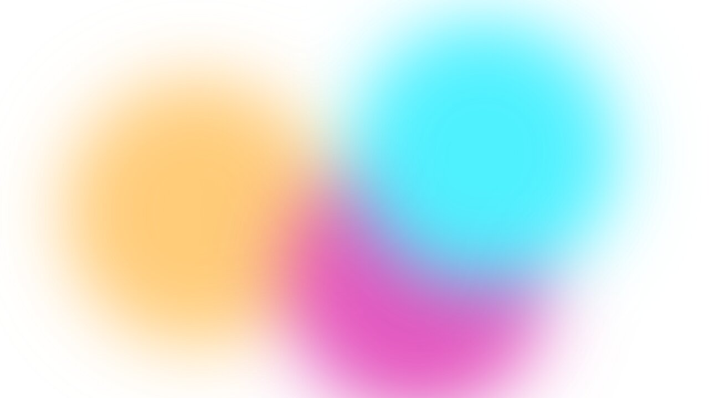
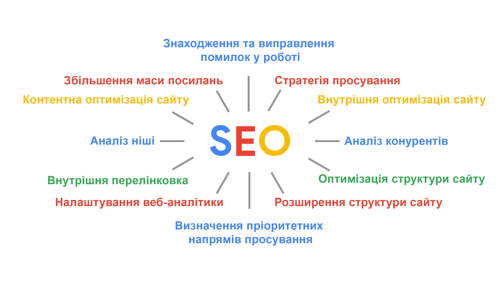
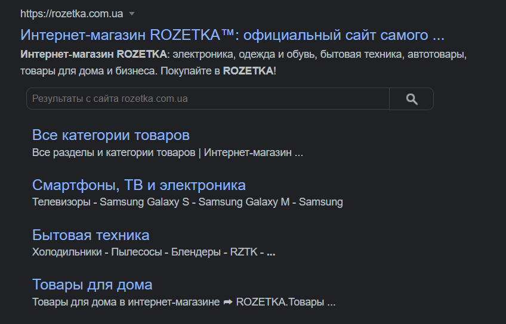

SEO –
модифікація та
оптимізація для сайту,
яка дозволяє налаштувати його під
конкретні
пошукові
запити, тим самим покращити його відвідуваність, що дозволяє залучити більшу кількість
клієнтів. Доречі, окрім самої теорії SEO, необхідних інструментів і т.п.
ще бажано запам'ятати елементарні теги з верстки сайтів(HTML):
Search Engine Optimization
<head>,<body> - перше, це невидима
частина сайту, де всілякі підключення, мета теги і т.п., друге - видима частина сайту, тут
записується основний видимий контент
<title> - Назва сайту(у вкладці
зверху та в сніпеті в якості головного посилання)
<h1>,<h2>,<h3>,<h4>,<h5>,<h6>
- Заголовки на сайті, від більшого(1), до меншого(6). Доречі так само павук
виставляє пріоритет на сканування, від 1 до 6
<img href="..." alt=""> - Зображення, шлях до нього у
файлі, та alt, тут записується назва картинки, вона відображається коли зображення втрачено(не
знайдено, видалено)

Головні переваги та недоліки(перед звичайною рекламою)
| Переваги | Недоліки |
|---|---|
|
|
Природний розвиток сайту -
у сайту зростає
відвідуваність, завдяки переходу на сайт за посиланням конкретно у серпі, такий спосіб переходу
можно гарно комбінувати з іншими методами;
Довіра клієнтів - одна з
головних задач seo
- зробити все,
щоб клієнт отримав те, що шукає + відповісти його інтенту, тому цей підхід так приваблює більшість
відвідувачів. Якщо ігнорувати цей пункт, то можна бути покараним Google'ом, або втратити певну
кілкість клієнтів;
Немає жодних гарантій -
ніхто не
знає як
працюють алгоритми
Google,
тому залишається лише намагатися, але це не такий мінус, бо існує купа тем на Reddit і т.д., де
можна дізнатися думки професіоналів про конкретні зміни чи оновлення.
Термінологія
ПС - пошукова система;
SERP - сторінка результатів
пошуку;
Сніппет - перегляд сторінки
у вигляді
тексту,
він включає посилання на сайт, назву та опис, так само пошуковик може сам генерувати такі сторінки,
якщо вони не налаштовані, в такому випадку інформація буде взята зі змісту самого ресурсу;

Релевантна сторінка -
сторінка, яка відображає
найбільшу подібність до того, що було введено в пошуковий рядок;
Позиція сайту в пошукових
системах - номер місця, на
якому знаходиться сайт SERP;
Інтент користувача - те, що
користувач хоче побачити
вбивши певну фразу в пошуковий рядок (наприклад: Наполеон, що хоче користувач, торт або інформацію
про історичну особистість?);
Пошуковий робот (бот, павук)
- програма, яка сканує
браузер та заносить до бази даних інформацію про сайти;
Індекс ПС - база даних, в
якій зберігається
інформація у
вигляді стислих версій сайту, таким чином браузер і знаходить контент у SERP за певних запитів,
спираючись на цю базу даних;
Пошукові оператори -
ключові слова, які
звужують
пошукову область, залишаю в ній тільки найнеобхідніше і справді те, що потрібно користувачеві;